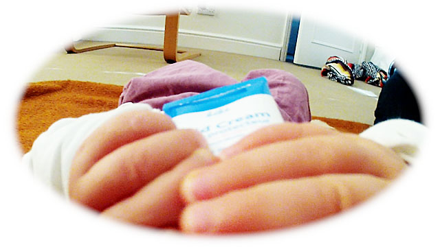
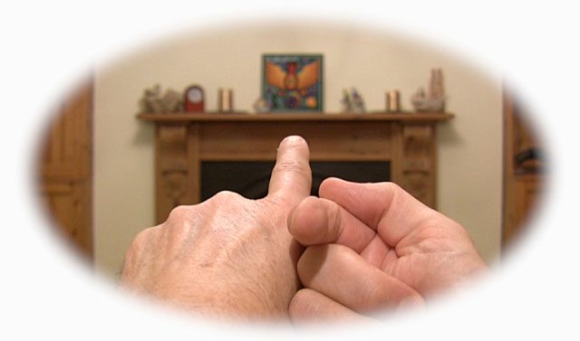

Throughout our lives we’re always two-sided. We always have both a public and a private identity. On the one hand we are individuals in the eyes of others, on the other hand we are capacity for the world. However, we are not always aware of our two-sided nature. There are potentially four main stages in our lives, and as we move through these stages our attention oscillates between our public and our private selves. Sometimes our focus is on one side, sometimes on the other. The four main stages are the baby, the child, the adult and the seer.
In the first stage we were unaware of our appearance, unaware of our public identity. We hadn’t yet learned to see ourselves through the eyes of others. Conscious only of our own point of view, our private reality, we were faceless, at large, space for the world, without putting it in these or in any terms.
In the second stage of the child we were becoming aware of our public identity. Seeing ourselves more and more through the eyes of others, we began learning to take responsibility for ourselves as individuals. In the process we began overlooking our private reality. But our attention was inconsistent. Often we would forget about our public identity, completely losing ourselves in whatever we were doing. But as we grew older, these periods of unselfconscious openness and freedom came less often and went more quickly.
In the third stage of the adult we identify profoundly with our public identity. Seeing ourselves as others see us, we’re in no doubt at all that we are what we look like. In this stage we deny the reality of who we really are. It would seem that the price of genuinely becoming a person is the loss of our private self. We may not lose it for long, but lose it we must. Many benefits flow from becoming an individual, but though we may not know it, we are now cut off from our centre and source. It’s not surprising if we find ourselves feeling that something isn’t quite right, that we are missing something important.
Fortunately this need not be the end of our journey. We can go on to the fourth stage of the seer where we discover the reality of our private self and begin drawing on its immense healing power. Seeing who we really are at centre we now begin living a truly balanced, two-sided life – private as well as public, public as well as private.
One of the good things about losing touch with our private self as we grow up is that when we return to it we see it with fresh eyes. It seems that we have to leave Home before we can really appreciate how wonderful Home is. And because our individuality doesn’t disappear when we see who we really are, we can now celebrate our one consciousness with many voices.
These stages are a map for each of us individually. They are also, in general terms, a map for our species. In the distant past we were not very self-conscious: not having yet developed the art of seeing ourselves from outside, we didn’t have a strong idea of being separate from the rest of the world. More recently we have become highly conscious of our appearance, of being human and therefore separate from other species and the planet. (Identifying with the objective view of ourselves, we dismiss our original subjective view as ‘primitive’.) However, this narrow, exclusive, one-sided view of ourselves is now giving way to a combination of the objective and the subjective – a two-sided view. As well as being aware of what we look like at a certain range – our human identity – a growing number of us are also seeing who we really are, our central non-identity that, infinitely wide and deep, includes all beings, all things. This development suggests that as a species we are now moving into the next stage of consciousness. If you are seeing your true Self, you are evidence of this evolutionary change. Hopefully enough of us will see who we really are quickly enough to transform the way we as a species see ourselves – before our narrow, one-sided view causes us, and the rest of life, irreparable harm. Surely we can no longer go on with only a few of us enjoying Enlightenment. We need it to be the norm. The survival of civilisation and life as we know it may well depend on, if not the majority of us, at least an influential minority, awakening to and acting from our central, all-inclusive Self.
However, important as numbers are, it’s not really a numbers game. When just one of us looks within and sees the one indivisible Self that we all are, then she (or he) is seeing as and for all of us – though we may not know it, she knows it for us. We are all within the One that she is. In this sense, when any one of us awakens to our true Self, then that one – that One – gathers the rest of us up in his or her awakening – in the One’s awakening to itself.
Seeing now the Light within yourself, you are seeing as and for us all. You are gathering us all up in the Light. Thank you!